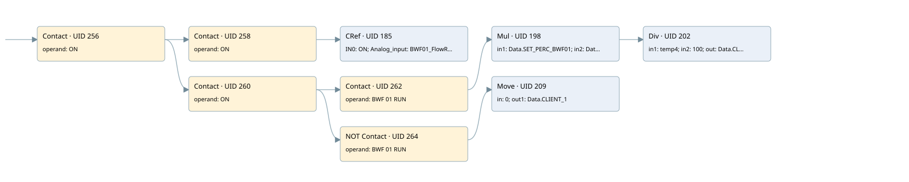

client 1 bwf01 flow rate
analog input conversion · 검색 색인 순서 5 · 원본 내부 NID 추정 5
백업 PLF 원본의 3114625 바이트 위치에서 복원한 XML. 검색 문서 1735의 객체 키 16102200136b000000000000와 연결했다. 이름 해석 19/19개. 남은 RefId는 상수 또는 미해석 참조다.
연결 구조 다시 그리기
원본 Part/PCon/Wire를 이용한 연결도다. TIA 화면의 래더 배치 또는 실행 결과를 재현한 그림은 아니다. 핀 연결은 아래 표와 원본 XML을 기준으로 읽는다. 노드 위에 마우스를 두면 피연산자 이름을 볼 수 있다.

접점·코일·블록과 피연산자
| Part UID | Gate | Negated 핀 | 연결 피연산자 |
|---|---|---|---|
| 256 | Contact | operand = ON | |
| 258 | Contact | operand = ON | |
| 185 | CRef | 호출 참조: Signal linearization; IN0 = ON; Analog_input = BWF01_FlowRate; Coeff = Coeff.COEFF_BWF1_FEEDER_FLOW_RATE; Zero = Coeff.ZERO_BWF1_FEEDER_FLOW_RATE; OutValue = Data.CLIENT_1; Out_of_range = Allarm.Flow_rate_BWF01_OFR | |
| 260 | Contact | operand = ON | |
| 262 | Contact | operand = BWF 01 RUN | |
| 198 | Mul | in1 = Data.SET_PERC_BWF01; in2 = Data2.Set_TH; out = temp4 | |
| 202 | Div | in1 = temp4; in2 = 100; out = Data.CLIENT_1 | |
| 264 | Contact | operand | operand = BWF 01 RUN |
| 209 | Move | in = 0; out1 = Data.CLIENT_1 |
접점 경로를 펼친 조건식
Contact·O/A·비교기의 원본 연결을 읽기 쉽게 펼친 보조 해석이다. POWER는 전원 레일 시작을 뜻한다. 호출 블록·에지·타이머의 내부 동작과 다중 쓰기 순서는 이 표로 실행 검증하지 않았다. 미해석 핀과 RefId는 원문 연결표에서 확인한다.
| UID | 동작 | 대상 | 원본 접점 경로 | 내용 |
|---|---|---|---|---|
| 209 | Move | Data.CLIENT_1 | (ON AND NOT [BWF 01 RUN]) | Move 입력 0 |
원본 배선 연결
| Wire UID | 동일 Wire 연결 끝점 |
|---|---|
| 266 | Powerrail {} ↔ Part 256.in |
| 232 | ORef 212 (ON) ↔ Part 256.operand |
| 257 | Part 256.out ↔ Part 258.in ↔ Part 260.in |
| 233 | ORef 214 (ON) ↔ Part 258.operand |
| 259 | Part 258.out ↔ Part 185.en |
| 235 | ORef 215 (ON) ↔ Part 185.IN0 |
| 236 | ORef 216 (BWF01_FlowRate) ↔ Part 185.Analog_input |
| 237 | ORef 217 (Coeff.COEFF_BWF1_FEEDER_FLOW_RATE) ↔ Part 185.Coeff |
| 238 | ORef 218 (Coeff.ZERO_BWF1_FEEDER_FLOW_RATE) ↔ Part 185.Zero |
| 239 | Part 185.OutValue ↔ ORef 219 (Data.CLIENT_1) |
| 24 | Part 185.Out_of_range ↔ ORef 23 (Allarm.Flow_rate_BWF01_OFR) |
| 240 | ORef 221 (ON) ↔ Part 260.operand |
| 261 | Part 260.out ↔ Part 262.in ↔ Part 264.in |
| 241 | ORef 222 (BWF 01 RUN) ↔ Part 262.operand |
| 263 | Part 262.out ↔ Part 198.en |
| 243 | ORef 223 (Data.SET_PERC_BWF01) ↔ Part 198.in1 |
| 244 | ORef 224 (Data2.Set_TH) ↔ Part 198.in2 |
| 246 | Part 198.eno ↔ Part 202.en |
| 245 | Part 198.out ↔ ORef 225 (temp4) |
| 247 | ORef 226 (temp4) ↔ Part 202.in1 |
| 248 | ORef 227 (100) ↔ Part 202.in2 |
| 249 | Part 202.out ↔ ORef 228 (Data.CLIENT_1) |
| 250 | ORef 229 (BWF 01 RUN) ↔ Part 264.operand |
| 265 | Part 264.out ↔ Part 209.en |
| 252 | ORef 230 (0) ↔ Part 209.in |
| 253 | Part 209.out1 ↔ ORef 231 (Data.CLIENT_1) |
식별자 해석 근거 19개
| ORef UID | RefId | 이름 | IdentXmlPart 파일 | 해석 방법 |
|---|---|---|---|---|
| 212 | 1 | ON | 0678-IdentXmlPart.xml | UID/RID + search-text + NID agreement |
| 214 | 1 | ON | 0678-IdentXmlPart.xml | UID/RID + search-text + NID agreement |
| 215 | 1 | ON | 0678-IdentXmlPart.xml | UID/RID + search-text + NID agreement |
| 216 | 30 | BWF01_FlowRate | 0678-IdentXmlPart.xml | UID/RID + search-text + NID agreement |
| 217 | 31 | Coeff.COEFF_BWF1_FEEDER_FLOW_RATE | 0676-IdentXmlPart.xml | UID/RID + search-text + NID agreement |
| 218 | 32 | Coeff.ZERO_BWF1_FEEDER_FLOW_RATE | 0676-IdentXmlPart.xml | UID/RID + search-text + NID agreement |
| 219 | 33 | Data.CLIENT_1 | 0676-IdentXmlPart.xml | UID/RID + search-text + NID agreement |
| 23 | 363 | Allarm.Flow_rate_BWF01_OFR | 0676-IdentXmlPart.xml | UID/RID + search-text + NID agreement |
| 221 | 1 | ON | 0678-IdentXmlPart.xml | UID/RID + search-text + NID agreement |
| 222 | 35 | BWF 01 RUN | 0678-IdentXmlPart.xml | UID/RID + search-text + NID agreement |
| 223 | 37 | Data.SET_PERC_BWF01 | 0676-IdentXmlPart.xml | UID/RID + search-text + NID agreement |
| 224 | 39 | Data2.Set_TH | 0676-IdentXmlPart.xml | UID/RID + search-text + NID agreement |
| 225 | 40 | temp4 | 0677-IdentXmlPart.xml | UID/RID + search-text + NID agreement |
| 226 | 40 | temp4 | 0677-IdentXmlPart.xml | UID/RID + search-text + NID agreement |
| 227 | 42 | 100 | 0675-IdentXmlPart.xml | literal candidate: UID/RID/NID + nearby named declarations + search-text agreement |
| 228 | 33 | Data.CLIENT_1 | 0676-IdentXmlPart.xml | UID/RID + search-text + NID agreement |
| 229 | 35 | BWF 01 RUN | 0678-IdentXmlPart.xml | UID/RID + search-text + NID agreement |
| 230 | 44 | 0 | 0675-IdentXmlPart.xml | literal candidate: UID/RID/NID + nearby named declarations + search-text agreement |
| 231 | 33 | Data.CLIENT_1 | 0676-IdentXmlPart.xml | UID/RID + search-text + NID agreement |
검색 코드 보조 자료
참조 명칭을 찾기 위한 자료이며 실행 순서나 AND/OR 관계는 위 연결표로 확인한다.
"on" "on" "signal linearization" "on" "bwf01_flowrate":p "coeff".coeff_bwf1_feeder_flow_rate "coeff".zero_bwf1_feeder_flow_rate "on" "bwf 01 run" mul "data".set_perc_bwf01 "data2".set_th div #temp4 100 "bwf 01 run" move 0 "data".client_1 #temp4 "data".client_1 "data".client_1 "allarm".flow_rate_bwf01_ofr